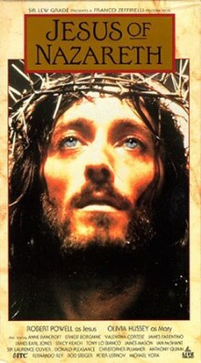
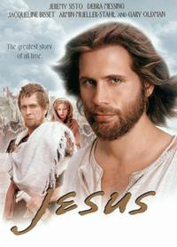

Course: Jesus in the Movies
Lecture #6: “Jesus of Nazareth” (1977)
& “Jesus: The Mini Series” (2000)
Franco Zeffirelli, a few days before Christmas, 1973, made one of the most important decisions of his professional life. He agreed to direct for TV the film about the life of Jesus that would become Jesus of Nazareth.

RAI, the Italian state Television organization and ATV, the British commercial television network would take responsibility for the film. Ingmar Bergman had been first choice, but he had his own projects underway.
Zeffirelli had several successes, Romeo and Juliet and Brother Sun, Sister Moon under his belt but some of his other projects collapsed so he had time for this new Jesus film.
Another factor is his acceptance was the additional length of time that TV would give him to develop the story of Jesus. In the mini-series format he would have over 6 hours. Since Zeffirelli had a long-standing dream of portraying Jesus as a Jew who was no enemy to his people, past or present, he accepted the offer.
Zeffirelli was deeply affected by the 1965 Vatican II statement, even going to the Vatican library to read again this statement on Judaism. He felt a responsibility to bring this to the screen. He says: "The point I wanted to make was that Christ was a Jew, a prophet who grew out of the cultural, social, and historical background of the Israel of his time...."
Tho intending to base his film on all four gospels and being conversant about the issues of biblical scholarship with regard to the gospels and the historical Jesus, Zeffirelli expressed particular appreciation for the narration and the trustworthiness of the gospel of John. In fact, contrary to most modern scholars, he considered John to be an eyewitness account by the so called "beloved disciple."
Therefore, Zeffirelli’s film would carry forward that harmonizing trajectory of Jesus films.
Like his predecessors, Zeffirelli discovered that filming in the Holy land was not possible so he ended up, not in Utah, but in Morocco and Tunisia. Among the extras in the cast, in the synagogue scenes, were members of the ancient Jewish community that still lived on the Isle of Djerba off the coast of Tunisia. Scene 11-3 min
Like Stevens, he selected many well-known actors/actresses for significant roles: Lawrence Olivier, James Mason, Anne Bancroft, Peter Ustinov, among others. Jesus was played by an English actor, Robert Powell.
Anthony Burgess, the English novelist, wrote the script (with later revisions, of course) and Maurice Jarre, who had written the music for Lawrence of Arabia and Dr. Zhivago did the musical score.
The actual filming took place from late 1975 to May 1976, first in Morocco and then Tunisia. Shooting the film in Muslim lands brought its own special misunderstandings because of the honor repeatedly accorded both Mary, the mother of Jesus and Jesus himself in the Qur'an.
The Qur’an affirms Mary to be the virgin mother of the prophet Jesus thus there were Muslim men on the set who refused to even look at the actress playing Mary.
Or again, the Qur’an suggests that Jesus may not have actually been killed or crucified (Surah 4). In his role as Jesus, Robert Powell insisted on carrying a heavy wooden beam, not a fake one, for the crucifixion sequence. His sufferings, as much actual as acted, became obvious as he made his way to the place of execution.
The Tunisian extras suddenly reacted with a muttering that gave way to despair. The extras came to believe that the blood-covered Powell had been beaten and nailed. Calm was restored only with the assistance of the Tunisian members of the crew who assured those present that Powell only appeared to have been crucified. Powell finally had to say get on with it.
NOTE: Text in Highlight is Optional
From: Robert Powell: How portraying Christ changed his life
The star of the most impressive TV epic ever, NBC's 'The Life of Jesus', is a 31-year-old British actor who generally plays slick roles. But he starved himself for 12 days before the Crucifixion scene and then, almost literally, died on the cross...
Perhaps no role in recent years has had a more significant effect upon an actor than the part of Jesus has had upon Robert Powell. It was obvious that Franco Zeffirelli’s six-episode series, shot in primitive Tunisian and Moroccan locations for nine months, had made great physical and mental demands upon the slight Englishman. But that was only part of the story. For, several months into the shooting, he had already undergone a profound philosophical change.
Robert, whom American audiences have also seen in the films 'Mahler' and 'Tommy' explained it to me this way: "There was an aspect of Christianity that always distressed me. The meaning of Christianity is so simple, but its tenets are complicated. This is what put me off. Before I began this film, I had no particular interest in religion and absolutely no opinion of Christ.
"Now, I do believe in Christ and His divinity, even though I do not necessarily go to church. Prior to being cast in the part, my knowledge of Christ was limited to Sunday school teachings and religious stories, all on a rather immature level. I knew this would never be enough for me as an actor, to work with in developing a character. So, I read the Bible through thoroughly, which I'd not done before… taking it apart and analyzing it. I also consulted works of reference and commentaries on the Bible because I wanted to obtain other people's ideas as well.
"An actor has to be objective when interpreting a part. Nonetheless, after playing Christ for all these months, it would be difficult not to really believe in him." Concluded Robert.
We were talking during a break in the day's shooting, sitting amidst camera equipment and makeup boxes, with hundreds of Tunisian extras sprawled out on the ground around us, within what was meant to be the old city of Jerusalem.
Robert was no longer the man I got to know during his days on British TV. Gone was his slick, sophisticated image, his witty, offhand manner.
Physically now, his hair fell below his shoulders, his mustache and beard were appropriately long and unkempt. But one sensed that the greatest change was within the actor himself. He seemed to be in the throes of self-examination: humble, yet excited by the discoveries he was making about himself.
"Several scenes have particularly moved me, such as the filming of the Sermon on the Mount. Franco shot it just as the sun hit the groves of cypress and olive trees and came across the fields. But generally, it was fairly dark and the hundreds of extras descending in groups, illuminated by the fires they made to keep themselves warm, made a stunning sight. Halfway through the scene, I was so affected by its beauty that I began to cry. Franco decided to keep that in the movie, just as it was.
"My interpretation of Christ doesn't bear a relationship to any other actor's handing of the part in previous movies about Him. I hadn't seen any of these other films, like The Greatest Story Ever Told and King of Kings, and thought it better, actually, that I hadn't.
THE JESUS STORY AS A JEWISH STORY
This film underscores the spiritual vitality of first century Judaism. The viewer sees people in a broad range of religious ceremonies, in Galilee and Jerusalem, in synagogues and the temple.
The film begins by placing the story of Jesus within the context of Jewish Messianic expectations. The Infancy narratives from both Luke and Matthew are used. Also, the infancy gospel of James where Anna, Mary's mother, plays a prominent role. Basically, the first couple hours are devoted to the birth and youth of Jesus.
The lengthy section on Jesus’ adult ministry makes clear the harmonizing aspect as incidents and teachings come from both the Synoptics and John. The two best known episodes serve as a transition from Galilee and Jerusalem. They are presented without the grandeur and drama often associated with them. These are the Sermon on the Mount, consisting only of the beatitudes and Lord's prayer from Matthew, and the raising of Lazarus from the dead at Bethany from John-Scenes, 59
The film ends (after covering virtually all the incidents in all the gospels) with a paraphrase of the worlds from Matthew (again): “I am with you everyday until the end of time."
The beauty of the way Zeffirelli weaves all these episodes together with imaginative storytelling thru the expansion of characters known from the gospel accounts and thru other created characters and subplots shows great dramatic subtlety and artistic sensitivity. Much more so than Bronston's King of Kings.
For example, thru the creation of Zerah, a recognized leader of the Sanhedrin, Judas is led to believe that arrangements have been made for Jesus to explain himself to the Sanhedrin, not for Jesus to be tried by that body. Thus Judas the betrayer is betrayed, leading to his suicide.-Scene 72-3/2
THE PORTRAYAL: Jesus as Suffering-servant Messiah
Zeffirelli achieved his stated objective for Jesus does appear as a Jew who emerged out of the Israel of his time. More particularly, the messianic expectation of Israel.
The film does not divulge how Jesus himself became aware of his messiahship but after his baptism by John --thru whose eyes we first see the adult Jesus--Jesus comes to the synagogue in Nazareth fully conscious of his messianic identity (Lk.)
Jesus own messianic self-understanding is confirmed by Peter's confession. This also serves as a turning point, as in most the Jesus films, with Jesus prediction of death in Jerusalem. Only after this scene from the synoptics does Jesus begin using the I Am sayings so characteristic of John's gospel (John 9) -- Scene 68,69 / 10min
The central issue throughout the film, both for the ancient participants and the modern viewer, is the identity of Jesus himself. Most the miracles and parables are included, but the cursing of the fig tree and the parable of the vineyard, used by Pasolini, is absent. Perhaps this particular incident and parable have been omitted from the Zeffirelli script because they have often been interpreted within Christianity as a statements about God's rejection of Israel.
It is up to Nicodemus (Lawrence Olivier) to provide the definitive interpretation of Jesus Identity as the Messiah as he hangs on the cross. Nicodemus recites the "suffering servant" passage from Isaiah 53 that concludes with the familiar words:. . . . "he was wounded for our transgressions, he was abused for our iniquities." - Scene 85-Thru Nicodemus 6 min (7 iF go to death)
Nicodemus as a Jew, not the roman centurion, becomes the theological commentator. this servant messiah idea, particularly in British scholarship, was around just prior to Zeffirelli’s film. This tradition emphasizes Jesus' intentionality about his death on the cross but don't know if it was conscious fulfillment of Isaiah 53.
In Zeffirelli's film there is nothing apocalyptic, coming again at the end of history, about the cinematic portrayal of Jesus as suffering-servant messiah. There is also nothing political about the present "kingdom" as proclaimed by Jesus.
Judas is shown as wrestling with the issue of the outwardness versus the inwardness of the Kingdom of God (Heaven). The emphasis is that the Kingdom is here and now.
Clips: show 30-40 min of scenes.
THE RESPONSE: FROM PROTEST TO INTERNATIONAL ACCLAIM
This was first shown in two three hour segments as a miniseries on palm Sunday and Easter, 1977 (April 3 and 10). It was shown in the U.S., Great Britian and Italy as well as other countries simultaneously.
The film, before even being shown, aroused the ire of religious leaders in the U.S. who represented conservative or fundamentalist Protestantism. Zeffirelli had emphasized in an interview how Jesus would be portrayed as "an ordinary man--gentle, fragile, simple."
Bob Jones III, president of Bob Jones University, immediately attacked the film on the assumption that it would in some way compromise Jesus' divinity. He called for a letter writing campaign that supposedly produced 18,000 angry letters to G.M. (who had bought rights to the film). GM cancelled their sponsorship as a result, but Procter and Gamble picked it up.
The release of "Jesus of Nazareth" brought compliments from representatives of Christian, Jewish, and Muslim religious organizations who had served in an advisory capacity.
Reviewers and representatives of many evangelical Protestant publications spoke well of the film, including "Christianity Today", who cited Billy Graham and Bill Bright as religious leaders supportive of the film and criticized Bob Jones for his sight-unseen attack.
The more liberal protestant and the Catholic religious press were less enthusiastic for the film. The artistic strengths of the film were recognized but the film was found lacking literarily, historically and theologically. "Christian Century" didn't like the way the Gospel of John was accepted literally and that there was no distinction between the "Jesus of History" and the "Christ of faith". That is, no attempt was made to separate the affirmations of the early church from the events which make up a biography of Jesus."
These differing responses to the film by Protestant commentators mirror the ongoing debate within protestant circles about the authority of scripture and the nature of the "gospel."
Fundamentalists who operate out of a framework of biblical inerrancy and emphasize personal salvation, generally liked the film as a Christian statement. The writers representing liberal Christianity, assuming the gospels cannot be accepted at face value and stressing the social implications of the Christian message, found the film wanting as a theological statement.
"America" the Jesuit periodical, staked out a middle position by saying that the film affirms the humanity and the divinity of Jesus and he saw in the film "a respectable presentation of the New Testament...."
IN THE SECULAR PRESS: both Time and Newsweek were favorable noting both the placing of Jesus within the Jewish framework and the balance between his humanity and divinity.
Zeffirelli was able to create a coherent characterization of Jesus out of the diversity of the four gospels. He did this by having Jesus as the "secret Messiah" of the synoptics up until the confession of Peter. Thus, in Galilee, Jesus is secretive about who he is but in Jerusalem, after Peter's confession, He is open about who he is as the Gospel of John records.
With this skillful harmonizing of the four gospels, Zeffirelli has given the harmonizing trajectory of Jesus films its finest expression. It has become regular viewing fare during the Christmas and/or Easter season, usually presented in segments as a miniseries, which it is.
JESUS: THE MINI SERIES (2000)

Jesus, the mini-series was the first attempt in 22 years to do a life of Jesus for TV. Not since Franco Zeffirelli’s 6-hour series had it been attempted.
This film stands in the cinematic tradition of Jesus of Nazareth. Both this film and its 6-hour predecessor presuppose original screenplays that harmonize the diverse presentations of Jesus found in all four canonical gospels. Both films were shot in Morocco, at least in part. Both represent initiatives by Italian production companies who collaborated with international partners. And both turned to the Anglo-American world for actors to play title roles. In this case, Jeremy Sisto played Jesus.
Viewers turning on their TV sets and expecting to see a recognizable Jesus story have their expectations immediately challenged. Even before the title frame, three brief sequences depict cruelty wrought over the centuries "in the name of Jesus Christ."
Mounted crusaders charging with drawn swords; the burning of a heretic; modern trench warfare. The viewer soon discovers that these images occur in Jesus' mind as he dreams about what will subsequently result from, or in spite of, his appearing in the first century. This flash forward technique is used in two imaginative encounters between Jesus and Satan (we'll see one later).
This attention getting opening continues thru a tightly edited-series of sequences that establish the social setting for the Jesus story as well as the family context for Jesus life. this shows the situation in Palestine of the time with Rome over all and the power struggles as Herod Antipas and Caiaphas serve the pleasure of Rome.
Jesus comes from a tightly knit family of THREE (no siblings) that include his mother Mary, and adopted father, Joseph. Extended family include Lazarus, and Mary and Martha, and John the Baptist.
Thus, in this Jesus story, Jesus and his immediate family have been aware of his divine origin and his supernatural powers for as long as they can remember. Based on this premise, the story makes sense. Scene 4--4:30
The dramatic conflict centers around Jesus' non-violent mission as God's Son and Messiah who has appeared on the world stage, in an age of messiahs and violence, to die for humankind.
In the telling of the story the filmmakers have created the character of Livio, Roman citizen and political insider, whose comment and presence facilitate the action throughout the film.
They also highlight the relationship between Mary the mother of Jesus and Mary Magdalene in ways that reflect the medieval church's contrast between Mary the virgin and Mary Magdalene the repentant prostitute. But in the film itself, Jesus verbally affirms Mary Magdalene to be a disciple, an affirmation consistent with recent scholarship. - Clip (Scene 21-1/2)
The difficulty of creating dialogue for a Jesus film out of the scraps recorded in the gospels has long been noted. This film resolves the difficulty by imaginatively creating the give and take among the characters, including Jesus, even for those episodes that have some recognizable basis in the gospel texts. The film simply ignores the words of Jesus in the gospels; and when identifiable words do appear, they are woven into the fabric of the conversation. Show example -Scene 17 - 5 min
Whatever its limitations, Jesus generally succeeds cinematically. The use of lighting for the indoor and nighttime scenes is particularly striking and the musical score supports the action unobtrusively.
HISTORICAL DIMENSION
Viewers familiar with, and sympathetic to the scholarly quest for the historical Jesus will be disappointed in this particular cinematic portrayal. Two main options for understanding Jesus are being debated in recent life of Jesus research:
On the one hand, Jesus has been viewed as the eschatological prophet whose deeds and words anticipate God's imminent restoration of Israel. Accordingly, this Jesus moves withing the thought world of Jewish apocalyptic expectation. E. P. Sanders, among others, has long been associated with his position which began with Albert Schweitzer.
On the other hand, Jesus has been viewed as a subversive sage whose words and deeds challenge the various social, economic, and religious boundaries that divide God's people among themselves. Accordingly, this Jesus creatively adapts the Jewish wisdom tradition and expresses his distinctive voice thru parables and aphorisms. The Jesus seminar collectively, and many of its members individually, have been associated with this position.
However, In Jesus, the title character appears as neither the eschatological prophet nor as a subversive sage. He doesn't proclaim the coming "kingdom" when Israel will be restored nor does he teach god's present "kingdom" thru parables and aphorisms. In fact there is very little use of Jesus' sayings from the synoptic gospels. The only Parable told by Jesus is the treasure buried in a field (Mat 13:44)
These omissions become understandable with the recognition that the Gospel of John provides the narrative framework for this Jesus story as well as Jesus' clear understanding of himself as the Son of God.
John the Baptist, after his baptism, refers to Jesus as the "Lamb of God" which is found only in John's gospel. His first miracle his also from John, changing water into wine at Cana. The raising of Lazarus is his last public act before entering Jerusalem, also only John's gospel.
Since the Gospel of John has come to be viewed by scholars primarily as theology in narrative form, this reliance of Jesus upon John clearly points the viewer in the direction of the film's theological import.
Show a few clips to make point: Scene 9=1/1⁄2 (Baptism), Scene 12-4 min (Cana) ; scene 24-4 min (Lazarus)
THEOLOGICAL DIMENSION
Viewers who embrace LOVE as the central theological and ethical catagory of the Christian story and who want to see within that story a fully human Jesus will most appreciate this film.
This Johannine theme of LOVE is the sub-text that often comes to the surface in the film on the lips of Jesus himself. But the second encounter between Jesus and Satan in the garden on the night before his death, constitutes the theological center of the film that must be experienced, not just reported.
Here the viewer is again confronted by flash-forwards of human inhumanity and overhears the dialogue between Satan and Jesus.
Show this clip: 7 min - Scene 29- (Romans coming for Jesus- 5 min).
Basically, this is showing that in spite of "killing for Christ will be big business thru the centuries" Jesus believes that love will triumph. ..."And those who want to will find in me the strength to love until the end."
This film more than any other tries to humanize Jesus. Jesus is attracted to Mary of Bethany, laments when Joseph dies, dances, and gets into a water fight with the disciples. Jesus smiles a lot also. But in Jesus, the words between Satan and Jesus in the garden abide even beyond the end.
LITERARY DIMENSION
Viewers familiar with the Jesus story would readily recognize scenes taken from the four gospels, though if one is looking for exact replicas of the gospel accounts will find abundant reasons to object. Many of the traditional scenes, including a Da Vinci-style last supper, are present.
The trial includes all the participants mentioned in the gospel. Caiaphas, Pilate, Herod (from Luke), and back to Pilate, who releases Barabbas and does the traditional hand washing.
The crucifixion, with three of the traditional 7 last words, the deposition and burial (to the sound of Sarah Brighton singing Pie Jesu by Webber—11/2 min) and the discovery of the empty tomb by, first, Mary Magdalene, and then Peter and John. The appearances, first to Mary Magdalene, the others and Thomas (John). -Scene 35-8mm
The infancy gospel of Thomas is even used when a report of an occasion when Jesus at age five makes clay pigeons that he brings to life. There is also some material from Josephus about an incident when Pilate slaughtered Galilean pilgrims in the temple (Luke 13:1-5). So far as I know, this incident finds its way onto the screen for the first time, with the obvious intention of showing Pilate to be a man capable of brutal complicity.
show appropriate clips: Total 35 mm